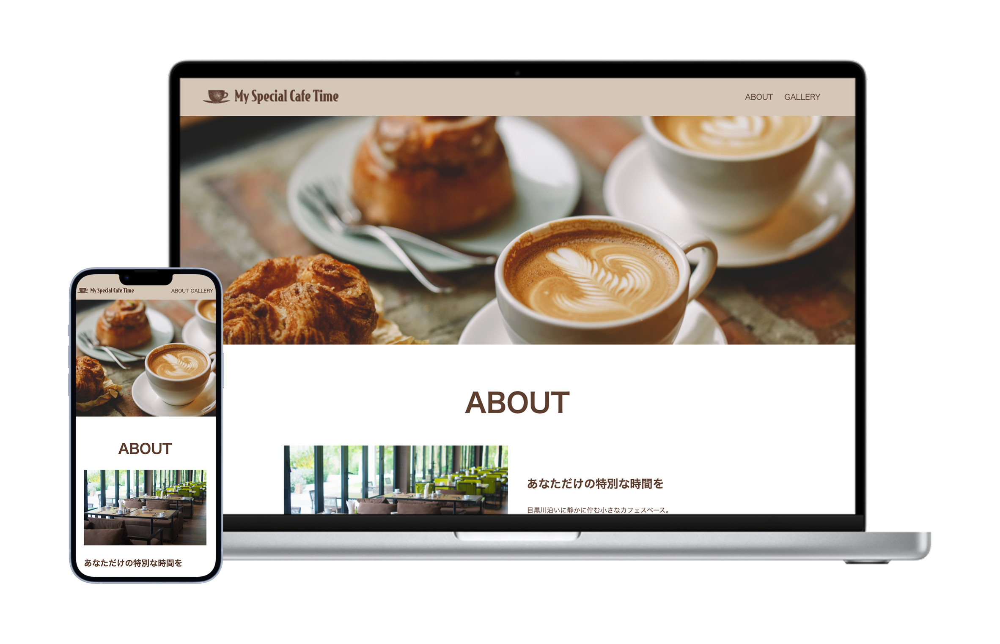
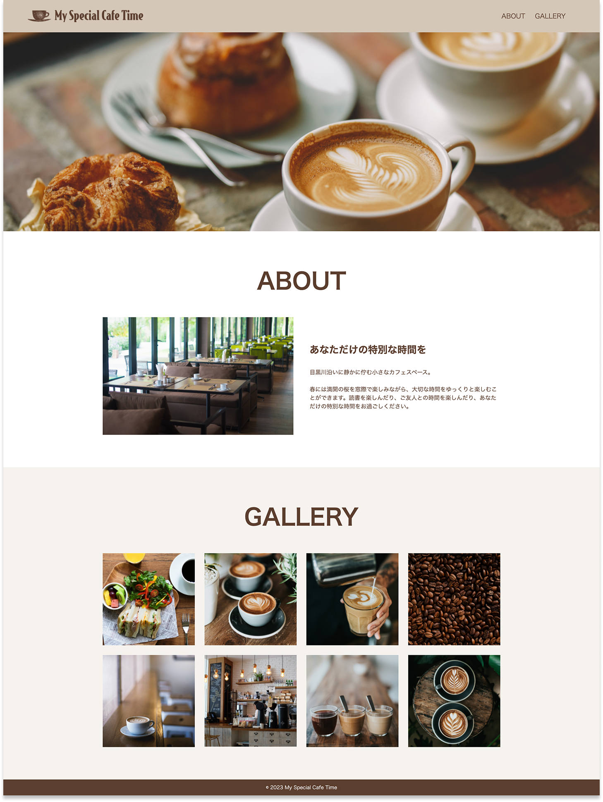
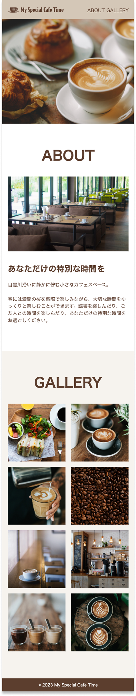

My Special Cafe Time

作品説明
-
URL
-
サイト種類
コーポレートサイト（カフェ／シンプルな店舗紹介サイト）
-
概要
架空のカフェのサイトを制作しました。
-
目的
既存デザインをもとに模写コーディングを行い、HTML・CSSのレイアウト実装やレスポンシブ対応の理解を深めることを目的としました。
-
ターゲット
カフェ巡りが好きな20〜30代の男女
-
コーディング
セマンティックなHTMLを意識し、header / main / section / nav など適切な要素を使用して、構造が明確なマークアップを行いました。
また、picture 要素による画像の出し分けや、alt 属性の設定、見出し階層の整理を行い、アクセシビリティにも配慮しています。
レスポンシブ対応では、スマートフォンとPCそれぞれで最適なレイアウトになるよう設計し、余白・文字サイズ・行間も調整することで、落ち着いたカフェの雰囲気が伝わるよう意識しました。 -
制作期間
コーディング 5時間
-
使用ツール等
Figma / html / css / Visual Studio Code
作品の画面イメージ
TOP画面

